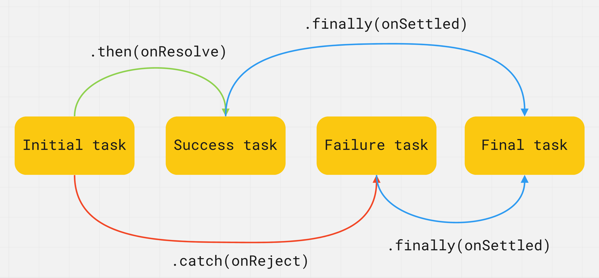

Промисы
Поли обещает испечь торт на мой день рождения через две недели. Если все пойдет хорошо и она не заболеет, у меня будет торт. Если Поли будет плохо себя чувствовать, то не сможет испечь торт. В любом случае, мы все равно устроим вечеринку. Обещание - это не гарантия выполнения, мы не знаем, выполнят его или нет. В программировании также есть задачи результат которых мы узнаем только в будущем.
 Promise (обещание, промис) - объект представляющий текущее состояние асинхронной операции. Это обёртка для значения, неизвестного на момент создания промиса. Позволяет обрабатывать результаты асинхронных операций так, как если бы они были синхронными: вместо конечного результата асинхронной операции возвращается своего рода обещание получить результат в будущем.
Promise (обещание, промис) - объект представляющий текущее состояние асинхронной операции. Это обёртка для значения, неизвестного на момент создания промиса. Позволяет обрабатывать результаты асинхронных операций так, как если бы они были синхронными: вместо конечного результата асинхронной операции возвращается своего рода обещание получить результат в будущем.
Промис может находиться в трёх состояниях:
- Ожидание (pending) - начальное состояние при создании промиса
- Исполнено (fulfilled) - операция исполнена успешно, с каким-то результатом
- Отклонено (rejected) - операция отклонена с ошибкой
 При создании промис находится в ожидании (pending), после чего может завершиться успешно (fulfilled), вернув результат (значение), или с ошибкой (rejected), вернув причину. Когда промис переходит в состояние fulfilled или rejected - это навсегда.
При создании промис находится в ожидании (pending), после чего может завершиться успешно (fulfilled), вернув результат (значение), или с ошибкой (rejected), вернув причину. Когда промис переходит в состояние fulfilled или rejected - это навсегда.
ИНТЕРЕСНО Когда промис исполнен или отклонен, то говорят что он завершён (settled). Это просто термин описывающий то, что промис находится в любом состоянии кроме ожидания.
Отличия промиса и callback-функции:- Коллбэки - это функции, обещания это объекты
- Коллбэки передаются в качестве аргументов из внешнего кода во внутренний, а обещания возвращаются из внутреннего кода во внешний
- Коллбэки обрабатывают успешное или неуспешное завершение операции, обещания ничего не обрабатывают
- Коллбэки могут обрабатывать несколько событий, обещания связаны только с одним событием
Создание
Промис создается как экземпляр класса Promise, который принимает функцию (executor) в качестве аргумента и сразу вызывает её, ещё до создания и возврата промиса.
const promise = new Promise((resolve, reject) => {
// Asynchronous operation
});
Функция executor оповещает экземпляр (промис), когда и как операция, с которой он связан, будет завершена. В ней можно выполнять любую асинхронную операцию, по завершении которой нужно вызвать resolve() при успешном выполнении (состояние fulfilled), или reject() при ошибке (состояние rejected). Значение возвращаемое этой функции игнорируется.
- resolve(value) - функция для вызова при успешной операции. Переданный ей аргумент будет значением выполненного промиса
- reject(error) - функция для вызвова в случае ошибки. Переданный ей аргумент будет значением отклоненного промиса

// Change value of isSuccess variable to call resolve or reject
const isSuccess = true;
const promise = new Promise((resolve, reject) => {
setTimeout(() => {
if (isSuccess) {
resolve("Success! Value passed to resolve function");
} else {
reject("Error! Error passed to reject function");
}
}, 2000);
});
В переменную promise будет записан промис (объект) в состоянии pending, а через две секунды, после того как будет вызван resolve() или reject(), промис перейдет в состояние fulfilled или rejected и мы сможем его обработать.
Метод then()
Код, которому надо сделать что-то асинхронно, создаёт обещание и возвращает его. Внешний код, получив обещание, навешивает на него обработчики. По завершении процесса асинхронный код переводит обещание в состояние fulfilled или rejected и автоматически вызываются обработчики во внешнем коде. После того как промис создан, его результат обрабатывается в callback-функциях. Код пишется так, как будто мы размышляем о том, что может произойти если промис выполнится или нет, не думая о временных рамках. Метод then() принимает два аргумента - callback-функции которые будут вызваны когда промис изменит своё состояние. Результат промиса, значение или ошибку, они получат как аргументы.
promise.then(onResolve, onReject)
- onResolve(value) - будет вызвана при успешном выполнении промиса и получит его результат как аргумент.
- onReject(error) - будет вызвана при выполнении промиса с ошибкой и получит её как аргумент.
 В примере, callback-функция onResolve будет вызвана через две секунды если обещание выполнится успешно, а onReject вызовется через две секунды в том случае, если обещание выполнится с ошибкой.
В примере, callback-функция onResolve будет вызвана через две секунды если обещание выполнится успешно, а onReject вызовется через две секунды в том случае, если обещание выполнится с ошибкой.
// Change value of isSuccess variable to call resolve or reject
const isSuccess = true;
const promise = new Promise((resolve, reject) => {
setTimeout(() => {
if (isSuccess) {
resolve("Success! Value passed to resolve function");
} else {
reject("Error! Error passed to reject function");
}
}, 2000);
});
// Will run first
console.log("Before promise.then()");
// Registering promise callbacks
promise.then(
// onResolve will run third or not at all
value => {
console.log("onResolve call inside promise.then()");
console.log(value); // "Success! Value passed to resolve function"
},
// onReject will run third or not at all
error => {
console.log("onReject call inside promise.then()");
console.log(error); // "Error! Error passed to reject function"
}
);
// Will run second
console.log("After promise.then()");
ИНТЕРЕСНО Если фукнции onResolve и onReject содержат сложную логику, их, для удобства, объявляют как внешние функции и передают в метод then() по имени.
Метод catch()
На практике в методе then() обрабатывают только успешное выполнение промиса, а ошибку его выполнения в специальном методе catch() для «отлова» ошибок.
promise.catch(error => {
// Promise rejected
});
Коллбек-функция будет вызвана при выполнении промиса с ошибкой, и получит её как аргумент.
// Change value of isSuccess variable to call resolve or reject
const isSuccess = true;
const promise = new Promise((resolve, reject) => {
setTimeout(() => {
if (isSuccess) {
resolve("Success! Value passed to resolve function");
} else {
reject("Error! Error passed to reject function");
}
}, 2000);
});
promise
.then(value => {
console.log(value);
})
.catch(error => {
console.log(error);
});
Метод finally()
Этот метод может быть полезен если необходимо выполнить код после того, как обещание будет разрешено ( fulfilled или rejected ), независимо от результата. Позволяет избежать дублирования кода в обработчиках then() и catch(). 
promise.finally(() => {
// Promise fulfilled or rejected
});
Коллбэк-функция не получит никаких аргументов, поскольку нельзя определить выполнено ли обещание или отклонено. Тут будет выполняться код, который необходимо запустить в любом случае.
// Change value of isSuccess variable to call resolve or reject
const isSuccess = true;
const promise = new Promise((resolve, reject) => {
setTimeout(() => {
if (isSuccess) {
resolve("Success! Value passed to resolve function");
} else {
reject("Error! Error passed to reject function");
}
}, 2000);
});
promise
.then(value => console.log(value)) // "Success! Value passed to resolve function"
.catch(error => console.log(error)) // "Error! Error passed to reject function"
.finally(() => console.log("Promise settled")); // "Promise settled"
Цепочки промисов
Метод then() результатом своего выполнения возвращает еще один промис, значением которого будет то, что вернет его callback-функция onResolve. Это позволяет строить асинхронные цепочки из промисов. Так как метод then() возвращает промис, до его выполнения может пройти некоторое время, поэтому оставшаяся часть цепочки будет ждать. При возникновении ошибки в любом месте цепочки, выполнение всех последующих then() отменяется, а управление передается методу catch(). Поэтому он находится в конце цепочки промисов.
Так как метод then() возвращает промис, до его выполнения может пройти некоторое время, поэтому оставшаяся часть цепочки будет ждать. При возникновении ошибки в любом месте цепочки, выполнение всех последующих then() отменяется, а управление передается методу catch(). Поэтому он находится в конце цепочки промисов.
const promise = new Promise((resolve, reject) => {
setTimeout(() => {
resolve(5);
}, 2000);
});
promise
.then(value => {
console.log(value); // 5
return value * 2;
})
.then(value => {
console.log(value); // 10
return value * 3;
})
.then(value => {
console.log(value); // 30
})
.catch(error => {
console.log(error);
})
.finally(() => {
console.log("Final task");
});
Промисификация функций
Представим что у нас есть асинхронная функция которая выполянет какую-то асинхронную операцию, например запрос на сервер. Для того чтобы обработать результат, её придётся спроектировать так, что она будет ожидать два коллбэка - для успешного запроса и для ошибки.
const fetchUserFromServer = (username, onSuccess, onError) => {
console.log(`Fetching data for ${username}`);
setTimeout(() => {
// Change value of isSuccess variable to simulate request status
const isSuccess = true;
if (isSuccess) {
onSuccess("success value");
} else {
onError("error");
}
}, 2000);
};
const onFetchSuccess = user => {
console.log(user);
};
const onFetchError = error => {
console.error(error);
};
fetchUserFromServer("Mango", onFetchSuccess, onFetchError);
Сейчас функция fetchUserFromServer() знает слишком много о том коде, который будет использовать результат её работы. Она ожидает коллбэки и отвечает за их вызов при определённых условиях. То есть, мы передаём что-то внутрь функции (коллбэки) и надеемся что оно отработает правильно - это не хорошо.
Лучше если функция не заботится о том коде, который будет использовать её результат. Она просто выполняет какую-то операцию и возвращает результат своей работы во внешний код. Для того чтобы вернуть результат асинхронной операции, из функции необходимо вернуть промис. Промисификация - это преобразование функции с колбеками так, чтобы она не принимала коллбэки, а возвращала промис.
const fetchUserFromServer = username => {
return new Promise((resolve, reject) => {
console.log(`Fetching data for ${username}`);
setTimeout(() => {
// Change value of isSuccess variable to simulate request status
const isSuccess = true;
if (isSuccess) {
resolve("success value");
} else {
reject("error");
}
}, 2000);
});
};
fetchUserFromServer("Mango")
.then(user => console.log(user))
.catch(error => console.error(error));